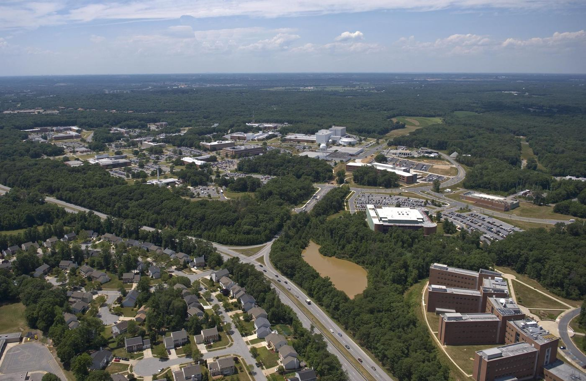

A passion for science, kept in the family.
SSAI began in 1977 as a one-person company, a single scientist with the conviction that the view from space could make life on Earth better. For nearly fifty years it has grown organically into a partner trusted on more than 150 of the world's Earth and space science missions, while the family-centered values present at its founding have never left.
It started with one person.
A true passion for science led to SSAI's founding as a one-person company.
That single scientist was Dr. Om P. Bahethi, who together with his wife, Sara Bahethi, set out to put rigorous science and uncompromising engineering in service of the agencies asking the hardest questions about our planet and the universe. There was no playbook and no shortcut, only a belief that careful observation, honestly interpreted, makes the world better.
From that humble beginning, SSAI has grown organically into the organization it is today: never by acquisition-for-its-own-sake, but by earning the next mission, then the next. The company set down roots in the Aerospace Building in Lanham, Maryland, across the road from NASA Goddard Space Flight Center, where so much of its work would unfold.
Nearly fifty years, measured in missions.
A handful of figures trace the arc from one founder to a national science partner.
From a single office to a partner on the great missions.
Over four decades, Om and Sara Bahethi worked to create and maintain a culture that supports a spirit of scientific exploration and innovation, respect for our planet and its environment, and a desire to make things better for humankind.
As that culture took hold, the work followed. SSAI scientists and engineers came to support the instruments, mission operations, and data systems behind landmark observatories and Earth-watching programs, from search-and-rescue satellites credited with aiding thousands of lives, to the data records that anchor modern climate science. The company became a fixture beside NASA Goddard, and a trusted name to NOAA, NSF, and agencies across the federal science enterprise.
- Grown organically from one person into a multidisciplinary science, engineering, and data-analytics company.
- A certified woman-owned, family-led small business throughout its history.
- Headquartered in the Aerospace Building, beside NASA Goddard Space Flight Center, Lanham, Maryland.

NASA / Goddard Space Flight Center / Bill HrybykOne purpose, held across decades.
The work has always pointed the same way: turn the view from space into understanding on the ground, and leave the planet a little better than we found it.
Whatever the era or the mission, the company's compass has not moved, science pursued with integrity, in service of life on Earth.
The next generation.
In 2021, Chairman Om and Secretary Saraswati Bahethi passed leadership to their son, Praveen.
An executive with a background managing technology firms, Praveen Bahethi has been committed since 2021 to returning the company to its focus, scientific and engineering innovation. He is joined by Dr. Shilpa Bahethi, MD, a member of the family and the company's former corporate treasurer, who serves as Chief Executive Officer.
The family-centered values that were so important at our beginning remain central to who we are today. Leadership changed hands; the conviction it was built on did not.
A belief that outlasts the founder.
For nearly 48 years, Dr. Om P. Bahethi built SSAI into a beacon of excellence in Earth and space science. His work with NASA and NOAA embodied a lifelong passion for discovery.
That passion endures beyond the company, through the Bahethi Family Foundation, scholarships, and a commitment to STEM equity that carries his belief forward: that science, pursued with integrity, makes the world better.
The values present at the founding, still central.
Five values have held across every mission the company has touched, from the first one-person year to today.
Trust
We instill trust through honesty and transparency.
ValueIntegrity
We exercise scientific integrity and uncompromising engineering as the foundation of our professional ethics.
ValueTeamwork
We build strong teams to execute our business practices.
ValuePassion
We innovate and evolve by engaging our collective sense of wonder and enthusiasm.
ValueAccountability
We take ownership of our decisions and everything we do.
ValueFamily at the center
A woman-owned, family-led small business since 1977, the people changed, the principle did not.
Heritage